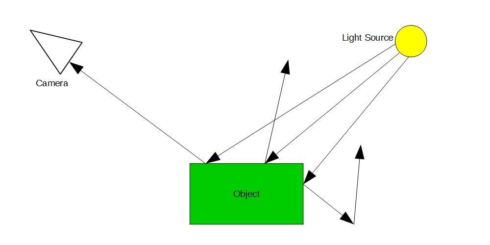
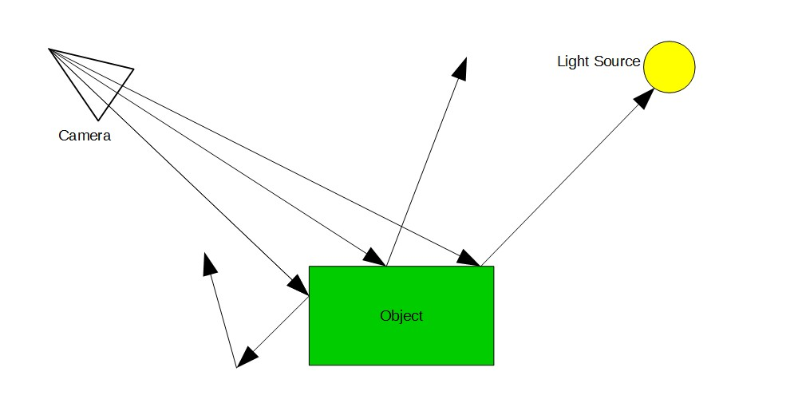
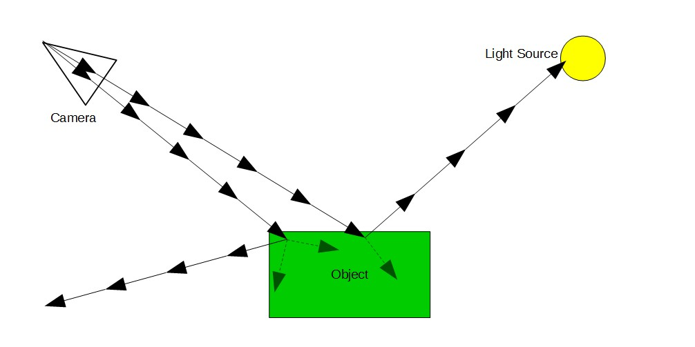
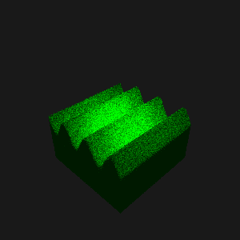

In late March/early April of 2017, I got interested in trying to make a ray tracer. While most ray-tracers ray-trace polygons, to make things simpler (and somewhat more interesting) I decided to make my ray-tracer work on implicit solids. You may be wondering what an implicit solid is. Stated simply, implicit solids define shapes by a function, rather than a set of triangles. In polygon based modeling, shapes (such as spheres) are represented hundreds of interconnected triangles in 3D spaces. In implicit solid based modeling, shapes are represented by a single function that, when called with x, y, and z coordinates, returns whether or not a point is contained in the solid.
Implicit solid modeling has several advantages:
- Easy to make features of solids be defined by numeric parameters
- Infinite detail
However, there are several disadvantages:
- Hard to convert to standard, polygon-based formats
- Hard to render
- Sometimes slow
- Does not give surface normals
Now how do ray tracers work? In real life, light rays travel outward from a light source, bounce off objects, and enter our eyes (or a camera) The diagram below illustrates this basic concept. 
A diagram illustrating how light behaves in real life. Notice that many of the rays do not reach the camera.
Simulating light rays this way would be realistic, but it would not be very efficient. Notice how most of the light rays do not reach the camera at all. To solve this problem, modern ray-tracers cast rays out from the camera and see if they hit the light source. To see how this would work, look at the below diagram.

An illustration demonstrating how a ray tracer works.
This method of ray tracing is obviously more efficient that just simulating all the light rays in a scene. In order to find the color for one pixel, a ray is cast outward at an angle determined by the location of the pixel and the rotation of the camera. Then, formulas are used to find out where the will first hit one of the triangles in the scene. The ray then interacts with the object, and bounces of at a new angle. When the ray is finally terminated, all the colors are calculated and the color of the pixel is written into the image. (Wikipedia has a good explanation of this) Most of time, hundreds of individual rays are averaged together to find the color for one pixel.
My algorithm had to be slightly different than the above. In most ray-tracing algorithms, the size, shape, etc. of objects is defined by many connected triangles. It is fairly easy to write a formula for finding the intersection point of a line (such as a ray) and a triangle. But since my ray tracer was going to work on implicit solids my rays would have "no idea" where the object was, without actually trying all the points where it could be. To solve this problem, I decided to make my rays jump forward in regular steps, checking whether or not the ray was inside an object at each step. The diagram below illustrates this. Small steps sizes are necessary for accurate images. If the step size is too large, there will be odd artifacts in the rendered image.

Notice that the rays only bounce after they are inside the object. Also, notice the faint, dashed rays coming out from the points where a ray first is inside the object. Because I had no way of telling which direction was in or out of an object, I made the ray try random directions until it figured out how to get out of the object. The faint rays signify unsuccessful directions that were found to be still inside the object.
Now what could my ray-tracer be useful for? Probably very few things. It has many limitations:
- Very slow (which is why I called it "KerslowlyRay", as pun on "Kerwizzy". See the caption on the image below for just how slow it is.) It might be possible to speed renders up by a little bit.
- Not good for complex scenes
- Not easy to model real world objects (e.g. trees, houses, etc.) with only functions
- Not easy to create mirrors, glass, or other materials that depend on knowing the angle of the surface.
However, there are a few things it might be good for:
- Rendering mathematical shapes (for example, 3D fractals such as a Mandelbulb)
- Rendering smoke that had complex changes in density, if the density could be defined mathematically
- Preforming simulations of relativistic effects on light. For example, the bending of light around black holes. This might be the only thing that it would actually be good for, because this would be hard to do in standard raytracers. In KerslowlyRay, this would only be a matter of distorting the ray at each step.
In any case, KerslowlyRay has been a fun project, and has taught me about other topics such as a little about vectors. If I could get it to run a lot faster, it might even be useful in some areas. In any case, it is pretty neat: a working ray tracer in under 1000 lines of Javascript!

A render of a simple sine wave with a diffuse material, made with KerslowlyRay. This image has 100 samples and took about 11 minutes to render. The base of the sine wave is 2 units across and the step size is 0.02. Notice that the edges of the sine wave appear almost beveled in some places. This is an artifact of the large step size.
Comment on Twitter